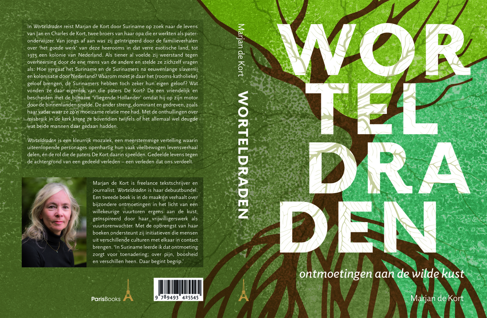

PERSBERICHT Middelburg, februari 2026
Boekpresentatie Worteldraden – ontmoetingen aan de wilde kust
Op donderdagavond 26 februari 2026 houdt auteur Marjan de Kort in het Polderhuis Museum in Westkapelle een presentatie over haar eind vorig jaar verschenen boek Worteldraden – ontmoetingen aan de wilde kust. Eerst presenteerde zij haar debuut in Suriname, aansluitend in Nederland, te weten bij De Drvkkery in Middelburg.
Tijdens de presentatie in het Polderhuis zal zij ingaan op de reden van haar zoektocht in Suriname en het waarom van haar boek. Het verhaal wordt omlijst met foto’s van haar ontdekkingsreis in 2014 en de presentaties aldaar in 2025. Daarnaast zal zij enkele fragmenten voorlezen uit haar boek en daarover in gesprek gaan met het aanwezige publiek.
Voor belangstellenden is er bovendien gelegenheid het boek te laten signeren door de auteur.
Waarom een zoektocht in Suriname?
In Worteldraden reist Marjan de Kort door Suriname op zoek naar het leven en werk van Jan en Charles de Kort, twee broers van haar opa, in de vorige eeuw pater-onderwijzer aldaar.
“Als kind voelde ik al weerstand tegen overheersing van de ene mens door de andere en vroeg ik me af: Hoe vergaat het Suriname en de Surinamers na eeuwenlange slavernij en kolonisatie door Nederland? En waarom moet je er het rooms-katholieke geloof brengen, sowieso het geloof, de Surinamers hebben toch zeker hun eigen geloof? Wat vonden ze daar eigenlijk van die paters De Kort? De een weliswaar vriendelijk en bescheiden, met als bijnaam ‘De Vliegende Hollander’ omdat hij in soutane op zijn motor door de binnenlanden snelde. De ander daarentegen behoorlijk streng, dominant en gedreven, zoals mijn vader met wie ik lang een moeizame relatie had. En met de onthullingen over misbruik in de kerk kreeg ik bovendien twijfels. Deugde het allemaal wel wat beide mannen daar gedaan hebben?
Naast uitgebreid archiefonderzoek wilde ik vooral van de mensen zelf horen wat zij meegemaakt hebben met de paters De Kort, hoe zij waren als mens.”
Waarom een boek?
De motivatie voor haar reis? De zoons van haar te jong overleden broer deze bijzondere familiegeschiedenis meegeven én tegelijkertijd de lastige geschiedenis die Surinamers en Nederlanders delen, die van eeuwenlange slavernij en kolonisatie en de gevolgen daarvan.
“De oceaan scheidt ons, maar verbindt ons ook,” aldus Marjan. “In Suriname leerde ik dat ontmoeting zorgt voor toenadering, over pijn, boosheid en verschillen heen. Daar begint begrip. Luisteren naar elkaar, niet om te oordelen, maar om te begrijpen. Die nuance, daar kunnen we wel wat meer van gebruiken tegenwoordig. Of zoals filmmaker en auteur Natascha van Weezel het zo mooi zegt: ‘Strijden voor nuance als vorm van activisme’. En precies die boodschap is de reden dat ik dit boek geschreven heb, om de wereld een beetje beter te maken.”
Worteldraden is Marjans debuutbundel.
—————————————————————–
Meer informatie:
Boekpresentatie ‘Worteldraden’ – ontmoetingen aan de wilde kust’
Donderdag 26 februari 2026, 19.30–21.30 uur
Polderhuis Museum, Zuidstraat 156, 4361 AK Westkapelle
Entree €5.00 incl. koffie/thee/fris
Plaats reserveren: info@polderhuiswestkapelle.nl of 0118 570700.
Auteur Marjan de Kort
Telefoon 06 – 407 806 37
Mail: info@meerdanwoorden.com
Website: https://www.meerdanwoorden.com/interview-paris-books/
Lezersrecensie: https://www.hebban.nl/recensie/pierre-mg-peeters-over-worteldraden
Bijlage: Cover
